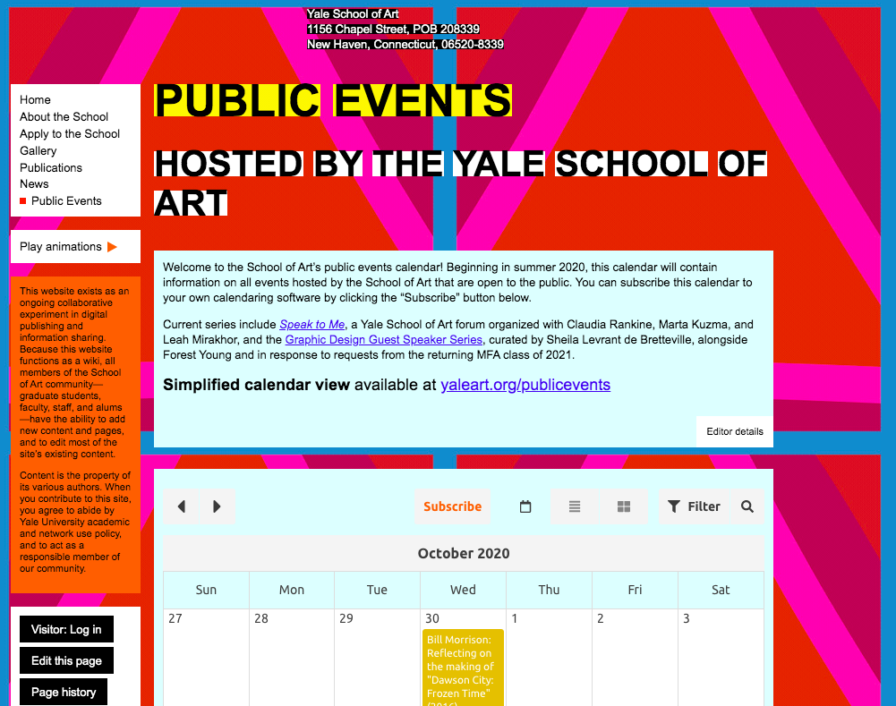

Overview
My partners, Virginia, Marvin, and I, aimed to test our subject,
Jordan, with 5 tasks in order to determine the usability of our chosen website:
The Yale School of Art. We timed each task, took observations, and recorded how
he felt after, along with any suggestions he had to offer.
1
FIND REGISTRAR AND ADMISSIONS PHONE NUMBERS
Time: 121 seconds
Accuracy: Many mistakes, recovered at the end, visited other pages first
Recall: Got better over time as it took a lot of exploring to figure out some of the tasks
Emotional response: Drained, did not enjoy using the website
Successful: yes
2
FIND THE ADMINISTRATIVE STAFF SECTION
Time: 27 seconds
Accuracy: few mistakes, about school tab first then faculty & staff
Recall: Recalled location due to first task
Emotional response: Drained, did not enjoy using the website
Successful: yes
3
FIND THE NOVEMBER 11TH NEWS ARTICLE
Time: 26 seconds
Accuracy: None
Recall: Recalled location due to first task
Emotional response: Drained, did not enjoy using the website
Successful: yes
4
FIND THE SCHOLARSHIPS TAB
Time: 20 seconds
Accuracy: None
Recall: Recalled location due to first task
Emotional response: Drained, did not enjoy using the website
Successful: yes

5
FIND THE BOOKMARK TAB ON THE COMMUNITY CALENDER
Time: 26 seconds
Accuracy: Many, found location unclear
Recall: Did not recall location, even from prior tasks
Emotional response: Drained, did not enjoy using the website
Successful: yes
~Didn’t appear as frustrated with tasks 2, 3, 4
~“Is this a trick?”, “does it even exist?”
~Confused with layout of website
~Took an average of 70 seconds per question
~Low satisfaction, usability, efficiency, effectiveness
~“Efficient at making me want to leave”
~Distracting backgrounds, gifs
~Top right directory links were helpful - only compliment